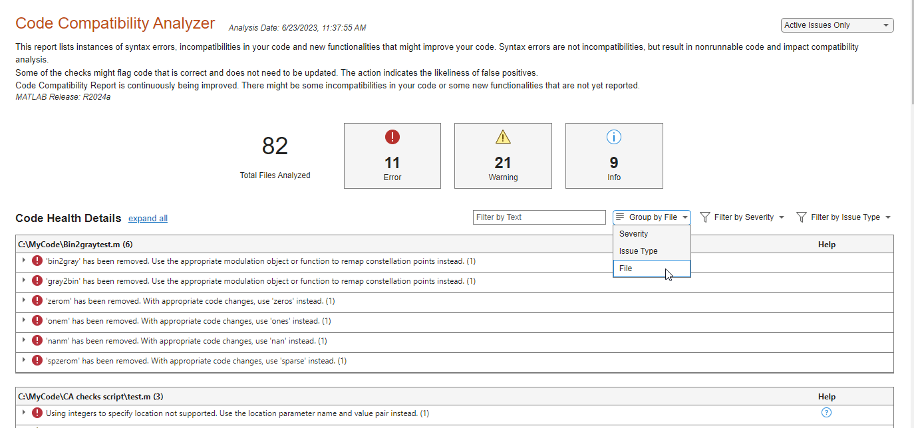
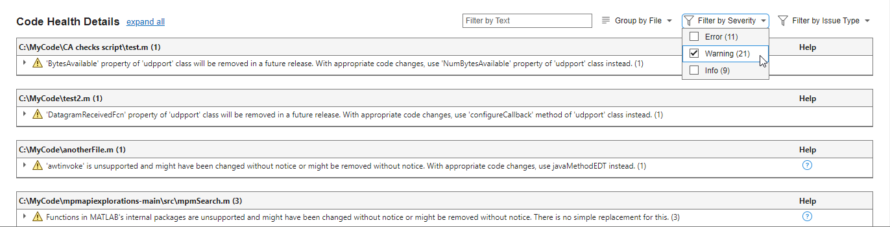

Code Compatibility Analyzer
Identify and address compatibility issues against current version of MATLAB
Since R2022a
Description
The Code Compatibility Analyzer app generates a report of syntax errors, code incompatibilities, and new functionalities that might improve the code in a selected folder and its subfolders.
Using this app, you can:
Identify compatibility issues.
Follow suggested actions to improve code.
A list of all checks performed by the MATLAB® Code Analyzer, including checks for compatibility issues, can be found here, Index of Code Analyzer Checks.
Open the Code Compatibility Analyzer App
MATLAB Toolstrip: On the Apps tab, under MATLAB, click the app icon:
 .
.MATLAB command prompt: Enter
codeCompatibilityAnalyzer
Examples
Open the Code Compatibility Analyzer.
codeCompatibilityAnalyzer
This command launches the Code Compatibility Analyzer app and generates a report of compatibility issues found within the specified code. The summary section at the top of the report provides an overview of the information contained in the report. This section shows how many files were analyzed and the total number of errors, warnings, and informational messages found in the analyzed code.

The Code Compatibility Analyzer generates information to help you upgrade your code to the latest version of MATLAB. It contains these issue types.
Syntax errors — Table with details about syntax errors. Syntax errors result in nonrunnable code, and while they are not introduced with a new version of MATLAB, syntax errors impact compatibility analysis.
Functionality that has been removed — Table with details about functionality used in the analyzed code that has been removed. For example, 'wavfinfo' has been removed. Use 'audioinfo' instead.
Functionality that has changed behavior — Table with details about functionality used in the analyzed code that has changed behavior. For example, 'legend' has changed and might interpret the name of an argument as a legend property instead of a label. To include a label with the same name as a legend property, specify the labels using a cell array or string array. Refer to the documentation for a list of affected property names.
Unsupported functionality that might cause errors — Table with details about functionality that is unsupported, undocumented, and not intended for use. Update your code to use documented functionality because unsupported functionality can cause errors and unexpected behavior changes. For example, 'awtinvoke' is unsupported and might have been changed or removed without notice. With appropriate code changes, use javaMethodEDT instead.
Functionality that will be removed — Table with details about functionality used in the analyzed code that will be removed in a future release. For example, 'aviinfo' will be removed in a future release. Use 'VideoReader' instead.
Functionality that will change behavior — Table with details about functionality in the analyzed code that will change behavior in a future release. For example, 'interp1(...,'cubic')' will change in a future release to perform cubic convolution. To continue using shape-preserving piecewise cubic interpolation, use 'interp1(...,'pchip')' instead.
New functionality that might improve code — Table with details about new functionality. Consider updating your code. Current code is expected to continue working in future releases, but newer functionality is recommended. For example, Programmatic use of DISPLAY is not recommended. Use DISP or FPRINTF instead.
Issues are grouped by Issue Type by default. You can change how issues are grouped by using the Group By list. Group the report by file.

You can filter the displayed messages by using the Filter by Severity and Filter by Issue Type lists. Filter the report to show only warnings.
